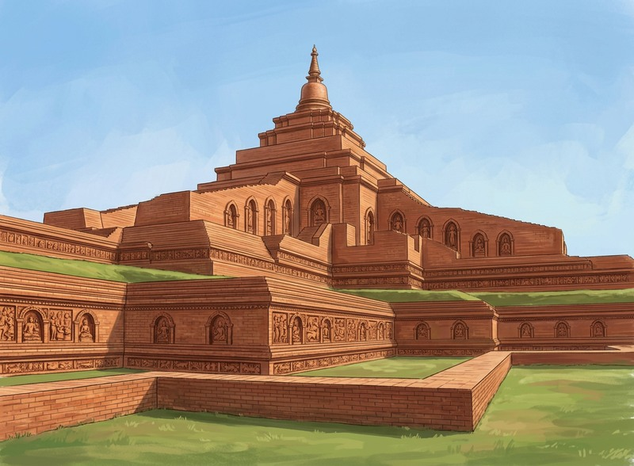
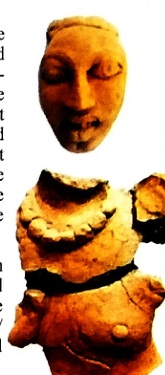
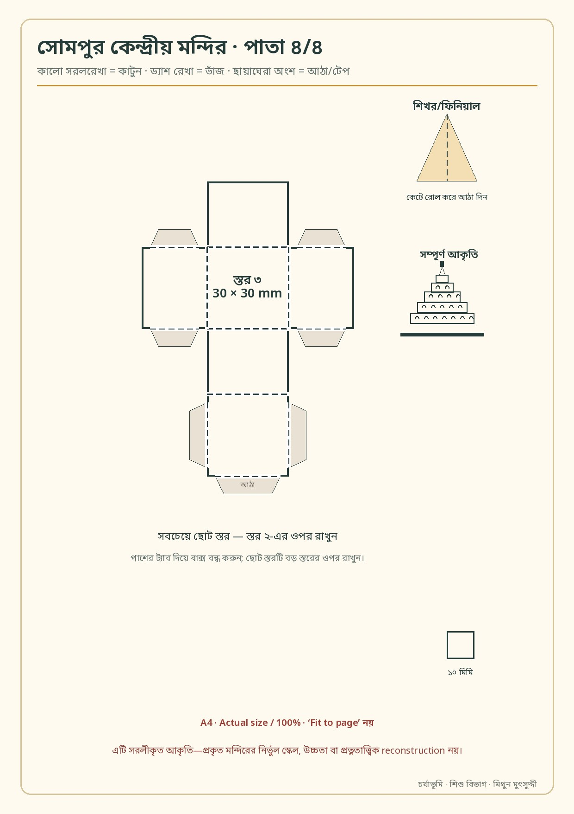

জাতক ও প্রত্নতত্ত্ব quiz০ / ০
শিশু বিভাগ · ৬–১২ বছর · পরিবার ও শ্রেণিকক্ষ
খেলতে খেলতে
বুদ্ধ ঐতিহ্য
জাতকের গল্প, প্রত্নতত্ত্বের রহস্য, রং-কাগজের কাজ আর মৈত্রীর সুর। নিজে তৈরি interactive-এর পাশাপাশি যাচাইকৃত বাইরের উৎস—কোনোটিই বাস্তব প্রত্নস্থলে খোঁড়ার নির্দেশ নয়।
- সাইন-আপ নেই
- ছবি upload নয়
- মোবাইল ও keyboard
অভিভাবক/শিক্ষকের ছোট নোট: কাঁচি-আঠার কাজে সাহায্য করুন। বাইরের ভিডিওতে বিজ্ঞাপন বা suggested content আসতে পারে; আগে দেখে নিন। কোনো শিশুর নাম, মুখ, ঠিকানা বা স্কুল এই পাতায় জমা নেই।
পড়া · দেখা · শোনা
জাতক, cartoon ও comic shelf
প্রতিটি item-এ ভাষা, অর্থ, উৎস ও rights label আছে। “ডাউনলোড” শুধু সেখানেই যেখানে স্থানীয় ফাইল তৈরি করা হয়েছে বা মূল উৎস ডাউনলোড দিচ্ছে।
সূত্র লোড হচ্ছে…
ভাবো · মিলাও · শেখো
বৌদ্ধ সংস্কৃতির দুটি খেলা
ভুল হলে ব্যাখ্যা মিলবে—কোনো leaderboard, ব্যক্তিগত নাম বা online account নেই।
প্রতীক memory০ চাল
একই প্রতীকের জোড়া খুঁজো
ধর্মচক্র, পদ্ম, স্তূপ, বোধি পাতা, ঘণ্টা ও টেরাকোটা—কোনটি কোথায়?
একটি কার্ড খুলে শুরু করো।
ভার্চুয়াল আর্কিওলজিস্ট
সময় বদলাও, আবিষ্কারের স্তর সরাও
এখানে ছবি ও digital মাটি—বাস্তব স্থান নয়। প্রত্নতত্ত্ববিদ বস্তু শুধু বের করেন না; স্তর, অবস্থান, পরিমাপ ও নথিও সংরক্ষণ করেন।

ক · টাইম ট্রাভেল slider
একই সোমপুর—দুটি দৃশ্য
বামে সম্ভাব্য digital reconstruction, ডানে বর্তমান ধ্বংসাবশেষের CC ছবি। আঙুল/মাউস বা keyboard-এর arrow দিয়ে slider চালাও।
Illustrationটি AI-assisted hypothesis; ১০০০ বছর আগের নির্ভুল চেহারা বা প্রত্নতাত্ত্বিক প্রমাণ নয়।

খ · Scratch-card dig site
মাটির নিচে কী?
আবিষ্কার: টেরাকোটা ভাস্কর্যের খণ্ডাংশ
ডালিঝরার প্রত্নতত্ত্ব অধিদপ্তরের জুন ২০২১ ব্রোশিওরে চিত্রিত নথিচিত্র। এটি মুদ্রা বলা হয়নি; আকার/পরিচয় ব্রোশিওরের সীমিত তথ্যের মধ্যেই রাখা হয়েছে।
মূল ব্রোশিওর দেখো ↗বাস্তব প্রত্নস্থলে: মাটি খোঁড়া, ফলক ঘষা, কিছু তুলে নেওয়া বা স্পর্শ করা যাবে না। দেখা কিছুর ছবি ও অবস্থান কর্তৃপক্ষকে জানানোই দায়িত্ব।
ডিআইওয়াই paper craft
ডিজিটাল থেকে টেবিলে ৩ডি model

প্রথম মডেল · সোমপুর কেন্দ্রীয় মন্দির
কাটো · ভাঁজ করো · তিন স্তর জোড়া দাও
চার পাতার A4 PDF-এ নির্দেশিকা, তিনটি আলাদা box-tier, আঠার ট্যাব, ফিনিয়াল ও ১০ মিমি scale-check আছে।
- Print — Actual size / 100%; “Fit to page” নয়।
- Cut & fold — সরলরেখায় কাটা, ড্যাশ রেখায় ভাঁজ; বড়দের সাহায্য।
- Build — বড়, মাঝারি ও ছোট স্তর একে একে স্তূপ করা।
এটি সরলীকৃত teaching model—নির্ভুল scale বা প্রত্নতাত্ত্বিক reconstruction নয়। প্রতিটি প্রধান স্থানের মডেল শেষ হয়েছে বলা হচ্ছে না; সোমপুর হলো প্রথম সম্পূর্ণ template।
Dot-to-dot · sketch · colouring
নিজের রেখা, নিজের রং
বুদ্ধ, ভান্তে, ড. বি. আর. আম্বেদকর, সোমপুর, ধর্মচক্র, পদ্ম ও স্তূপ—একটি বেছে canvas-এ রং করো বা সাত পাতার printable pack নাও।
ছবি শুধু তোমার device-এ তৈরি ও download হয়—কোথাও upload নয়।
সাত পাতার printable art pack ডাউনলোডCulture lab · সম্পর্ক বুঝে তৈরি
কোনটা বৌদ্ধ culture, কোনটা সাধারণ craft?
ফানুস, lantern, dragon/nāga mask, mandala, singing bowl, origami ও shadow art—সবকিছুকে একটিমাত্র ধর্মের স্থায়ী প্রতীক বলা যাবে না। আগে সম্পর্ক পড়ো, তারপর ধাপে তৈরি করো।
যা লাগবে:
সূত্র পড়ো ↗
কথা · অর্থ · সুর · শ্রবণ
কীর্তন কী? Buddha kirtan আর chant কি এক?
কীর্তন
কীর্তন সাধারণত devotional গুণকথা, নাম বা গল্পের সঙ্গীত; অনেক রূপে একজন ডাকলে অন্যরা উত্তর দেয়। বাংলায় এর ভাইষ্ণব ও অন্যান্য ধর্মীয় ঐতিহ্য রয়েছে—কোনো একটিই সব ধর্মের “একই কীর্তন” নয়।
Banglapedia · Kirtan ↗Buddha kirtan
বাংলার বারুয়া বৌদ্ধদের devotional song practice-কে Buddha-samkirtan/Buddha kirtan বলার উল্লেখ পাওয়া যায়। পালি chant, স্তোত্র, চর্যা, আধুনিক বৌদ্ধ গান ও স্থানীয় কীর্তন—এদের শব্দ, প্রসঙ্গ ও সুর আলাদা করে জানতে হবে।
Banglapedia · Music ↗নিচে sourced chant excerpts, regional culture lead, নতুন মূল গান এবং তিনটি search-indexed external listening lead আছে। YouTube-এর title/channel metadata যাচাই করা হয়েছে; কোনো upload-কে সব সম্প্রদায়ের প্রামাণ্য ঐতিহ্য বা rights-cleared archive বলা হচ্ছে না।
শিক্ষক ও পরিবার
সূত্র, স্বত্ব ও নিরাপত্তা—এক নজরে
স্থানীয় downloads
এই সাইটের জন্য নতুন তৈরি মিনি-কমিক, paper model, art pack ও song sheet। প্রতিটির ভেতরে scope ও safety note আছে।
বাইরের উৎস
Project Gutenberg, Wikimedia Commons, BuddhaNet, BBC Teach, San Fran Dhammaram Temple, Asian Art Museum, Rubin Museum, Himalayan Art Resources, Buddhistdoor, Tricycle, BSV, DhammaTalks, Mukto Arts ও Amar Chitra Katha-এর সূত্র ব্যবহার করা হয়েছে। External content-এর নীতি ও availability বদলাতে পারে।
যা অন্তর্ভুক্ত করা হয়নি
Internet Archive বা অন্য ওয়েবসাইটে পাওয়া Amar Chitra Katha PDF-এর উপস্থিতিই reuse permission নয়। তাই unofficial ACK PDF, protected lyrics, ভিডিও download বা rehost অন্তর্ভুক্ত নয়।
শিশু-সুরক্ষা ও privacy
Game score, drawing ও dig progress শুধু বর্তমান page memory-তে থাকে। নাম/ঠিকানা/ভয়েস record নেই। বাইরের লিংকে গেলে সেই প্ল্যাটফর্মের নীতি প্রযোজ্য।